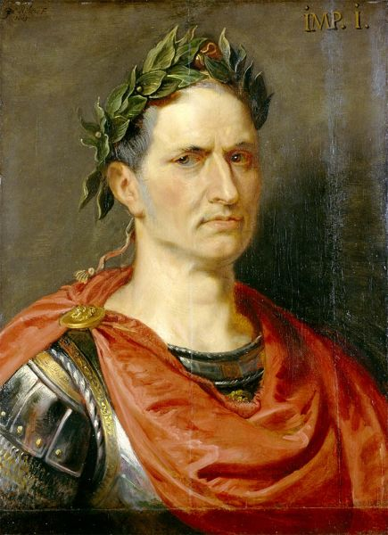
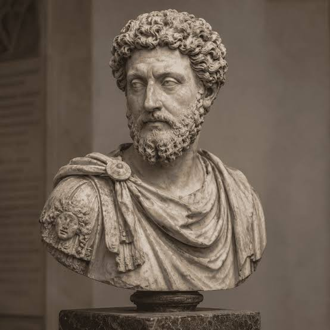
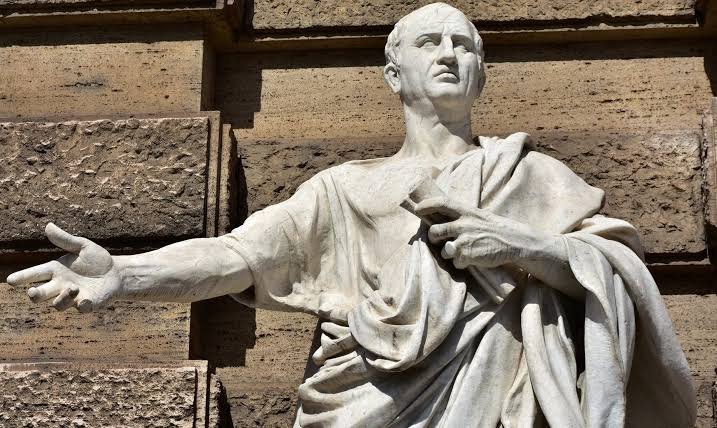

「賽は投げられた。一度決断したからには、もう後戻りはできない。運命のサイコロは振られたのだから、自らの手で（未来）を切り開くために、覚悟を決めて 前に進むしかないのだ。」

「我が人生は、我が思考の産物である。私たちの幸福は、私たちがどのような心構えで日常の出来事に向き合うかによって決まる。外の世界を変えることはできなくても、自分の心をコントロールすることはできる。どのような困難に直面しようとも、心に平和を持ち、前向きに生きることが大切なのだ。」

「本のない部屋は、魂のない体のようなものだ。知識や学びのない人生は、どこか虚しく、真の豊かさを欠いてしまう。本を読むことは、過去の偉大な思想家たちと対話し、自らの心を育てることである。学び続ける姿勢こそが、私たちの人生に光をともし、未来を切り開く力となるのだ。」